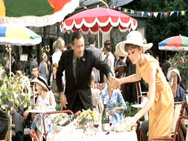

| Paris
When it Sizzles/C,B+ |
| Paramount/1963/110/ANA 1.85 |
Oh, those movie marketers, how could they ever go wrong with the proven
combination of William Holden wooing Audrey Hepburn. Paris When it Sizzles opens with a
promisingly wry South of France resort zoom on a Hollywood producer, dictating a wire amidst a bevy
of heaving bosoms. And when it follows the lead of the telegram and arrives in the Paris suite of
screenwriter Richard Benson, the sardonic dialogue of Benson promises a sophisticated screen romp.
With the arrival of Gabrielle Simpson, a stunning typist, romance is in the air born on the
glorious charm of the lovely young woman.
 |
| A sumptuous table setting with no
substance. ©Paramount |
Paris begins to fizzle when Benson runs out of ideas for the screenplay he
has to deliver to producer Alexander Meyerheim by the end of the weekend. As he dictates endlessly
silly possible scenarios to Gabrielle, the daffy scripts are played out with Holden and Hepburn
filling in for the character leads. This grows old before it ever really ignites. It's not so much
that the device is bad, it's the abysmal execution. The screenplay possibilities needed to be fresh
and daring. They only serve to stifle what could have been a terrific comic romance between Benson
and Hepburn. The screenwriting team probably thought all the silliness was hilarious, but they are
indeed int he minority.
Richard Quine, a director with a practiced hand at delivering comic fluff
with flair, cannot make a soufflé from broken egg shells. With snazzy production design and lots
of fine elements, Paris When it Sizzles boils down to a lousy reduction sauce. There's
nothing wrong with William Holden or Audrey Hepburn a dozen years after their successful fling in Sabrina.
They have the screen magic. The script, however, lets them down, pretty miserably at times.
Paris When it Sizzles is presented with the exquisite colors of summer Paris
intact and emphasized with practiced control. The flowers, colorful cafe umbrellas, even the food
glows with vitality. The image it sharp without looking too enhanced. The source material is
obviously in excellent condition. There a few marks of age, but they are happily fleeting. Contrast
ratio is excellent delivering theatrical pop to the DVD. A bright happy DVD overall, with clean
mono sound.
|
|
|
|

Selections from the Feature Archive
include articles on Akira Kurosawa, Frank
Darabont, Blonde Bimbos, Hollywood Street Gangs, or Vietnam: The
Hollywood Pariah, and many more....
.jpg)
Screen Voices and style of delivery often stamp an actor's screen
image indelibly. Click the lips to read more.

Imaging Science Foundation
The Imaging Science Foundation promotes proper standards in home theater viewing. ISF trained
technicians offer monitor calibration services to consumers. The difference in a properly
calibrated monitor can be astounding. Click on the image to find an ISF member near you.
 Jim
Doolittle Jim
Doolittle
ISF Instructor. Premier calibrator and expert front projection system setup technician in the
Boston area.
|

Elegant DVD portal with news, reviews, links and information
galore.

European film portal and hard to find video store.
|